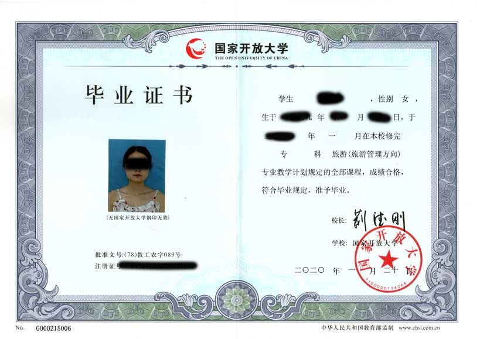
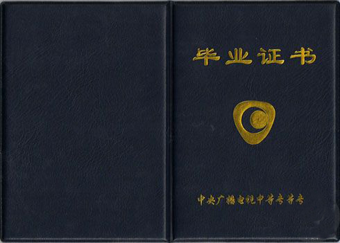
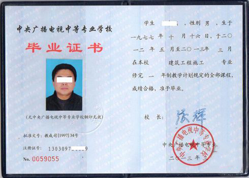

目录:
国家开放大学

国家开放大学（原中央广播电视大学）
（中华人民共和国教育部直属，国家重点大学！）国家开放大学（英文：The Open University of China）是一所世界一流公立成人高校，创立于2012年6月21日，中华人民共和国教育部直属，国家重点大学；国家开放大学以现代信息技术为支撑，学历教育与非学历教育并举，实施远程开放教育的新型高等学校。学校在中央广播电视大学基础上组建，面向全体社会成员，强调优质教育资源的集聚、整合和共享，强调以现代信息技术为支撑，探索现代信息技术与教育的深度融合。学校有权授予学士学位，由学校向北京市学位委员会申请并获批后，报国务院学位委员会备案。
原中央广播电视大学名称暂时保留，过渡时期采取“老人老办法、新人新办法”，中央广播电视大学的在校学生仍按原有关规定管理，国家开放大学挂牌以后新进入学习的学生，按照新政策执行。
截至2019年6月，国家开放大学共计招生1900万人，在校学生近405万人，本科生102万，专科生303万。年龄结构上，30岁以上的有160万人，40岁以上的学生40万人。
发展历程
1979年，中央广播电视大学和28个地方广播电视大学开始办学，揭开了我国远程开放教育发展的新篇章。2012年6月，为适应新世纪的发展需要，教育部批准在中央广播电视大学基础上建立国家开放大学。
2012年7月31日，国家开放大学在人民大会堂正式揭牌成立。中共中央政治局委员，国务委员刘延东为国家开放大学揭牌并发表题为《努力办好中国特色开放大学》的重要讲话。她强调，要以现代信息技术为支撑，整合共享优质教育资源，创新教育教学模式，办好中国特色的开放大学，为社会成员提供更加灵活便捷公平开放的学习方式和多层次多样化的教育服务，为建设学习型社会和教育强国、人力资源强国作出积极贡献。
国家开放大学是在中央广播电视大学和地方广播电视大学的基础上组建，以现代信息技术为支撑，办学网络立体覆盖全国城乡，学历与非学历教育并重，面向全体社会成员，没有围墙的新型大学。注册在籍学生359万人，其中本科学生105万人，专科学生254万人，包括近20万农民学生，10万士官学生，6000多残疾学生。国家开放大学的组建成立，标志着广播电视大学系统在新的历史起点上踏上了新的征途。
教发函
教育部关于同意在中央广播电视大学基础上建立国家开放大学的批复（教发函[2012]103号）
中央广播电视大学：
你校《关于中央广播电视大学更名为国家开放大学的请示》（电校规划[2011]10号）收悉。
根据《高等教育法》有关规定和《国家中长期教育改革和发展规划纲要（2010-2020年）》及《国务院办公厅关于开展国家教育体制改革试点的通知》（国办发[2010]48号）要求，以及专家考察、评议结果，经研究，同意在中央广播电视大学基础上建立国家开放大学，学校代码为51161。现将有关事项通知如下：
一、国家开放大学是教育部直属的，以现代信息技术为支撑，主要面向成人开展远程开放教育的新型高等学校
二、国家开放大学坚持非学历继续教育和学历继续教育并举。学校应以课程为单位建设学习资源，充分利用高校优质教育资源，促进学习资源的共建共享。积极推进“学分银行”建设，通过建立学习成果的互认和学分的累积、转换制度，探索搭建终身学习“立交桥”。
三、国家开放大学可以设置本科专业，按我部有关规定办理。首批设置本科专业为19个。
四、国家开放大学可授予学士学位，其程序是由学校向北京市学位委员会提出申请并获批准通过后，报国务院学位委员会备案。
五、中央广播电视大学名称暂时保留。
六、批复文件印发后2个月内向我部报送学校章程，我部将适时对学校办学和改革情况进行评估。
学校要进一步形成切实有效的质量保证体系；按照需求导向深入推进人才培养模式的创新，尤其在运用信息技术与开放学位教育的深度融合方面做出更大努力；切实和有效地加强实践教学环节，确保应用型人才培养目标的实现和学位教育质量。希望学校解放思想，更新理念，深化改革，科学定位，提高质量，办出特色。努力满足人民群众多样化、个性化的学习需要，为构建灵活开放的终身教育体系作出应有的贡献。
二〇一二年六月二十一日
探索
20世纪70年代英国开放大学成立以来，国家开放大学日益成为世界高等教育改革发展的一个重要趋势，它以开放教育为基本特征，强调教育观念的开放、办学方式的开放、学习对象的开放、教育资源的开放，为每一个有愿望、有能力学习的社会成员提供高等教育的机会和服务。“成立国家开放大学，绝不是广播电视大学的简单更名或换牌，而要适应国家发展需要和技术发展趋势，实现战略转型。”国家开放大学校长杨志坚在1日举行的国家开放大学文化建设座谈会上说：“从历史情况看，广播电视大学虽然具有开放大学性质，但开放得还不够，还不能完全适应不断发展着的经济社会的实际需要。”
根据国家开放大学的建设规划，今后将着力开展四项探索。
一是要探索注册入学、弹性学习、宽进严出的教育制度。
二要以网络核心课程、网络学习空间、网络教学团队、网络学习测评、网络支持服务、网络教学管理为建设重点，实现技术与教育深度融合。
三要实施学习者基于网络自主学习、远程学习支持与面授相结合的新型学习模式，大力开展职业培训、社区教育、老年人教育和公民素质教育的新型大学。
四要以学分银行建设为抓手，实现各种学习成果、积累和转换。
技术
现代信息技术发展及其广泛应用，深刻影响着人类的生产方式、生活方式和思维方式，对教育发展产生革命性影响。国家开放大学致力于探索科技与教育的深度融合，推进教育创新，提升办学能力、教育质量和管理水平，促进优质教育资源社会成员共享和教育公平。国家开放大学将依托高水平IT企业，建造远程教育云平台。依托高水平网络运营机构，借助虚拟专网、互联网、教育科研网、移动通信网和卫星网等，实现总部与分部安全、高速互联。依托高水平终端生产企业，研发国家开放大学移动互联学习终端，促进社会成员的泛在学习。通过“造云、借路、建端”，搭建强大的远程教育信息化支撑平台，为亿级用户提供学习支持与服务。
模式
国家开放大学致力于实现有支持的开放式学习，探索以学习者为中心，基于网络自主学习、远程学习支持服务与面授辅导相结合的新型学习模式。以需求为导向，以能力培养为核心，改革教学内容和课程体系，与行业企业合作，科学、灵活、有针对性地开设国家开放大学特色专业。改进教学方法，为学习者提供集多媒体资源、教学交互、学习评价和学习支持服务于一体的、优质网络课程。通过遍布全国的学习中心提供面授辅导，也可以通过高清、快速的双向视频系统促进师生实时交流，为学习者提供随时随地的远程学习支持服务。推进以终结性考试为主向形成性考核为主的多元评价模式转变。
系统
国家开放大学致力于促进全民终身学习，建设具备学分认证、转换、存取等功能的学分银行系统，为每个学习者建立个人终身学习档案。学习者可以按照学分累积规则，零存整取并申请获取相应证书。国家开放大学学分银行努力为各类教育培训机构之间的学分互认与转换提供基础，鼓励社会成员通过各种形式的学习累积学分，实现学历教育与非学历教育之间的沟通和衔接，搭建终身教育“立交桥”，促进终身教育体系的形成。
服务
国家开放大学也是一所新型的公益性大学，扎根基层，服务社会。利用国家开放大学网络平台和数字化学习资源库，开设网上大讲堂，向全体社会成员提供形式多样、内容丰富的网络讲座、公开课，提升公民科学文化素质，满足社会成员多样化、个性化学习需求。为普通高校、中高职院校、社会培训机构、行业企业、城乡社区提供包括远程学习支持、相关教育培训、信息咨询等各类公共服务。与相关国际组织、大学和机构开展针对性、多层次、宽领域的教育交流与合作。加强基于网络的孔子学院建设，大力推进对外汉语教学，促进中华文化走向世界。
组织机构
教学科研部门
>>| 文法教学部 | 经济管理教学部 | 理工教学部 | 教育教学部
>>| 农林医药教学部（中国燎原广播电视学校、“一村一”办公室） | 外语教学部 | 艺术教学部
>>| 实验学院 | 中等职业学校（中央广播电视中等专业学校） | 对外汉语教学中心
>>| 培训学院（培训中心） | 教育研究院（科研管理处）
教学科研管理与服务部门
>>| 教务部（招生办、考试中心） | 社会教育与职业培训部 | 学习资源部（图书馆）
>>| 信息化部（工程中心） | 学习支持与学生事务中心 | 教师发展中心
>>| 质量监控与评价中心 | 学分银行（学习成果认证中心）
行政管理部门
>>| 校长办公室
>>| 党委办公室 | 纪检监察与审计处 | 人事处（人才交流中心） | 离退休工作处
>>| 事业发展与合作办学部 | 新闻中心 | 财务与资产管理部
>>| 国际合作与交流处 | 工会 | 后勤保卫处
企业
>>| 资产管理集团公司
其他机构
>>| 教育部社区教育研究培训中心
>>| 教育部行业职业教育教学指导委员会工作办公室
体系
国家开放大学是由中央广播电视大学和地方广播电视大学为基础组建的一个完整的教学和管理体系。国家开放大学的办学体系由总部、分部、地方学院、学习中心和行业、企业学院共同组成，是国家开放大学充分发挥系统优势和现代信息技术优势，实现办学网络立体覆盖全国城乡，为我国社会成员提供多样化继续教育服务和学习机会的重要保障。
国家开放大学体系结构和运行机制如下：
总部
总部设在北京,依托中央广播电视大学组建，直属教育部管理。总部由理事会、校务委员会、咨询委员会、学术委员会、质量保证委员会,以及相关教学、科研、服务等职能部门组成。总部的主要职责是：研究制定大学发展规划、方针政策、工作规程、质量标准；组织协调开展教学、科研、服务和国际交流合作；统筹协调专业、课程和学习资源建设；开展教学质量检查评估等工作。
分部
分部是国家开放大学总体架构中的重要组成部分，是国家开放大学设立在省级区域的教学与管理机构。分部与所依托的省级电大，按照“一套人马、两块牌子”运行，即在省级广播电视大学的基础上，加挂国家开放大学分部牌子。省级电大原有的人、财、物隶属关系和行政管理关系不变，与中央电大原有的教学业务关系不变。分部校长由依托建设的省级电大校长担任。分部的主要职责是：根据总部的相关政策规定，研究、制定分部的具体发展规划和相关政策；设置、管理所属地方学院及学习中心；组织开展各项教学、科研、服务，以及相关教学资源、特色专业和课程建设和质量检查、评估等工作。
地方学院
根据国家开放大学地方学院设置标准，国家开放大学委托分部在所属区域内设立若干直属和相对独立的地方学院。学院的主要职责是：制定具体发展规划和政策；组织招生、考试和相关教学管理、质量检查工作；与学院所在地相关部门、企业等单位合作，充分利用国家开放大学各类学习资源和培训项目，大力开展相关职业教育、社区教育等非学历继续教育工作。
学习中心
根据国家开放大学学习中心设置标准，分部或分部授权地方学院在所属区域内设立若干学习中心。学习中心主要职责是：在分部或学院指导下开展招生、考试和具体的教学管理、教学辅导和学习支持服务工作；组织实施各类培训项目和开展社区教育等工作。
行业企业学院
根据国家产业结构调整和行业继续教育发展需要，国家开放大学与相关部委、行业协会、企业合作，建立若干行业、企业学院，行业、企业学院下设若干学习中心。主要职责是：制定具体发展规划和政策，开发职业教育和企业培训类资源，充分利用国家开放大学学习资源，大力开展以提升职业能力为核心的各项非学历继续教育工作，为建设学习型行业、企业服务。
运行机制
国家开放大学体系内部实行总部、分部两级管理体制，按照“统一战略、共同平台、资源共享、相对独立、各具特色”原则运行。学校机制
（一）统一战略国家开放大学体系秉持共同的使命、战略目标、发展任务、质量标准和价值追求。遵循相对统一的基本制度、政策，包括学习制度，专业、课程建设，学习成果认证，资源共建共享，质量标准和保证体系等。
（二）共同平台国家开放大学是各分部、学院、学习中心的公共平台。国家开放大学充分利用现代信息技术，搭建技术先进、功能强大、四通八达，集教学、科研、管理、服务于一体，能够满足教学、科研、服务和学分认证需要的网络平台。各分部可搭建与国家开放大学网络平台相融相通的网络应用平台。国家开放大学网络平台也是社会公共服务平台，为全体社会成员和相关高等学校、继续教育机构提供教育服务和教育支持。
（三）资源共享国家开放大学推进网络平台与优质教学资源的共建共享，提高质量，扩大规模，降低成本。出台相关政策，鼓励各方参与数字化学习资源共建、基于网络的专业和课程教学团队及科研团队共建。分期分批在分部设立若干数字化学习资源分中心，实现学习资源共建共享，并向社会开放国家开放大学数字化学习资源。
（四）相对独立各分部根据本区域经济社会发展需要和基本条件，自主制定相关改革发展政策，设置学院、学习中心，大力开展非学历继续教育。按照国家开放大学“错位发展”原则，建设特色专业和课程，达到建设标准的专业和课程，可上升到国家开放大学平台，面向全国招生。国家开放大学已有专业，各分部要充分利用，不再重复建设。
（五）各具特色鼓励各分部、学院、学习中心根据所在区域经济社会发展需要，探索形成各自的办学特色。尤其要在非学历继续教育方面，积极利用国家开放大学办学网络、学习资源和培训项目，自主开展各种有针对性的教育培训服务。
使命
国家开放大学强调“开放、责任、质量、多样化、国际化”的办学理念，大力发展非学历继续教育，稳步发展学历继续教育，推进现代科技与教育的深度融合，搭建终身学习“立交桥”，适应国家经济社会发展和人的全面发展需要，促进终身教育体系建设，促进全民学习、终身学习的学习型社会形成。经过10年努力，把国家开放大学建设成为我国高等教育体系中一所新型大学；世界开放大学体系中富有中国特色的开放大学；我国学习型社会的重要支柱。
联盟
为实现国家开放大学的历史使命和社会价值，促进学习型社会形成，充分利用社会优质资源，国家开放大学成立四大支持联盟。与国内若干所大学合作,成立大学支持联盟，依托其师资、专业、课程资源优势，全面促进国家开放大学建设。与若干行业协会、大型企业、中心城市合作,成立行业支持联盟、企业支持联盟和城市支持联盟，利用各自资源和优势，大力开展各类职业技能培训、社区教育、公民素质教育，推进学习型行业、学习型企业和学习型城市建设。
历史
1977年尚未恢复领导职务的邓小平在同中共中央两位负责人谈话时指出：“我们要实现现代化，关键是科学技术要能上去。发展科学技术，不抓教育不行。靠空讲不能实现现代化，必须有知识，有人才。没有知识，没有人才，怎么上得去?科学技术这么落后怎么行?要承认落后，承认落后就有希望了。看来，同发达国家相比，我们的科学技术和教育整整落后了20年。”“抓科技必须同时抓教育。从小学抓起，一直到中学、大学。我希望从在开始做起，五年小见成效，十年中见成效，十五年二十年大见成效。办教育要两条腿走路，既注意普及，又注意提高。”7月21日，在中共十届三中全会上，邓小平恢复中共中央副主席、国务院第一副总理等领导职务。他自告奋勇分管科技和教育工作得到中共中央同意，开始在科技战线和教育战线拨乱反正。8月4日至8日，邓小平主持召开了有33位著名专家和教授参加的科学和教育工作座谈会，并于8日作了《关于科学和教育工作的几点意见》的讲话。在谈到教育制度问题时，他指出：“教育还是要两条腿走路。就高等教育来说，大专院校是一条腿，各种半工半读的和业余的大学是一条腿，两条腿走路。”国务院批转教育部《关于1977年高等学校招生工作的意见》。《意见》规定：凡是工人、农民、上山下乡和回乡知识青年、复员军人、干部(年龄可放宽到30周岁)和应届毕业生，只要符合条件都可报考。考生应具有高中毕业或相当于高中毕业的文化水平。招生办法是：自愿报名，统一考试，地、市初选，学校录取。“文革”期间中断的高考制度就此得到恢复。
此前，教育部曾于1977年6月29日召开高等学校招生工作会议，提出继续采取前几年“群众推荐”的做法。邓小平恢复领导职务后明确指示：“就要下决心从高中毕业生中直接招考学生，不要再搞群众推荐。”根据邓小平关于改革高等学校招生制度的指示精神，教育部于8月13日至9月25日再次召开高等学校招生工作会议，制定了《关于1977年高等学校招生工作的意见》。邓小平亲自修改了这个意见。邓小平在会见来华访问的英国前首相爱德华·希思时，谈到中国恢复教育的艰难和人才短缺的严重问题。希思介绍了英国利用电视等现代化手段办开放大学的情况，告诉邓小平英国开放大学有20多万名学生，并表示愿意提供英国开放大学的有关资料，引起了邓小平的注意。邓小平表示，我们要利用电视手段来加快发展我国的教育事业。10月下旬，根据会谈纪要中邓小平的有关指示精神，教育部、中央广播事业局邀请有关部门，就开办电视教育、筹办电视大学问题交换了意见，并成立了电视教育领导小组。12月7日，《人民日报》发表题为《大力发展各级各类教育事业》的评论员文章，提出为了多出人才、快出人才，必须从我国的实际情况出发，·坚持“两条腿走路”多种形式办学的方针，强调要“办好电视、函授、广播等业余教育”。12月19日，教育部、中央广播事业局联合举办的面向全国的电视教育讲座(英语、数学、电子技术3种)在北京电视台(中央电视台前身)开播。这是北京电视台在相隔10多年后，首次恢复向全国播送电视教学节目。
1978年2月3日在国务院副总理兼国家科委主任方毅亲自督促下。教育部、中央广播事业局在会同有关部门研究后，向邓小平、方毅送交了《关于筹办电视大学的请示报告》，以及《关于开办电视大学的初步设想》等3个附件。报告认为，办好电视教育是多快好省发展教育事业，满足群众学习要求，培养和造就大批又红又专的人才，加速实现四个现代化的一项重要措施；在开办电视教育讲座的基础上：尽快筹办电视大学，已是势在必行。报告建议教育部和中央广播事业局集中力量办好面向全国的广播电视大学，即中央电视大学。2月6日国务院副总理方毅在教育部和中央广播事业局《关于筹办电视大学的请示报告》上批示：“报邓副主席审批。拟原则同意，编制、房屋、设备、交通工具、外汇等等有关具体问题，同有关部门商研解决。”同日，邓小平审阅了报告，并亲笔批示“同意”。3月18日国务院副总理方毅在全国科学大会上的报告中强调：“人才问题是实现科学技术现代化的一个十分突出的问题。有了人才，才能出成果。要采取果断措施，快出人才，多出人才。”“科学技术人才的培养，基础在教育。要认真办好大学、中学和小学，办好重点学校。要逐步实现教育手段的现代化，发展电化教育，充实和改善学校的实验设备。”他在讲话中首次公开提出，“要积极举办电视大学”。4月8日邓小平将英国前首相希思3月19日给他的来信批转国务院副总理方毅和教育部党组书记刘西尧：“请你们考虑，是否需要请希思帮助做点什么?我需要对他有个答复。”希思此信是专为向邓小平进一步介绍英国开放大学，并表示“十分乐于在这件事上提供任何帮助”。随信寄来的英国开放大学简介，指出“联合王国开放大学已被称作是英国教育在本世纪中最重要的创举”。方毅批示：“我看可考虑请他帮助，具体请西尧同志研处。”教育部党组对希思来信进行了研究，于4月18日专为此事向邓小平递交了报告，认为英国开放大学“在教学组织和管理方面的一些做法是可以借鉴的，现代化教学手段是应当引进的”，并建议邀请英国开放大学派代表团访华介绍其经验。4月22日邓小平在全国教育工作会议上讲话。他在谈到教育事业必须同国民经济发展的要求相适应的问题时说：“我们不但要看到近期的需要，而且必须预见到远期的需要；不但要依据生产建设发展的要求，而且必须充分估计到现代科学技术的发展趋势。”他指出，“要研究发展什么样的高等学校”，并特别强调·“要制订加速发展电视、广播等现代化教育手段的措施，这是多快好省发展教育事业的重要途径，必须引起充分的重视”。3个月后，教育部和中央广播事业局联合召开全国广播电视大学筹备工作会议，会后正式通知全国积极筹备成立广播电视大学。10月30日又联合发出通知，成立中央广播电视大学筹备处并开始办公。12月3日国务院副总理方毅在教育部和中央广播事业局联合召开的首次全国广播电视大学工作会议上讲话。他指出，要用现代化的手段来提高整个中华民族的科学文化水平，这个现代化的手段最好就是电视大学。比如像英国的开放大学，这个大学有20多万人。他在谈到采用这个方法最彻底的就是发射一颗直播卫星时透露，邓小平曾亲自拍板决定向国外购买一颗直播卫星。他说，我们当初胆子还没有那么大，还没想到这个。后来向邓副主席报告了，邓副主席就说，干脆买他一个算了，不就快一点么，无非是我们花点钱么，花个几千万么。方毅还介绍了他就购买卫星亲自与美、法、西德等国谈判的情况，并预言：直播卫星的事情一定会搞成功，如果我们天上地下都搞成了，我们提高整个中华民族的科学文化水平就有了强有力的手段。在卫星没有搞成功之前不能坐等，我们想在这之前把电视大学搞起来。他强调，电视大学在提高整个中华民族科学文化水平中会起很大的作用，很可能会超过正规大学。电视大学肯定有很强大的生命力，大家一定要支持这个新生事物。我们一定要广为宣传电视大学的重要性。
1979年1月11日国务院以国发(1979)14号文件批转教育部、中央广播事业局《关于全国广播电视大学工作会议的报告》，并在通知中指出：“举办广播电视大学，是我国高等教育事业发展中的新事物，对于扩大高等教育的规模，提高广大群众的科学文化水平，加速培养大量又红又专的人才，将会起重大作用。”国务院要求各省、市、自治区革命委员会和国务院各部委、各直属机构“大力支持广播电视大学的筹办工作，切实解决工作中的问题，注意总结经验，努力把广播电视大学办好”。教育部、中央广播事业局的报告指出，必须采取多种形式、多种途径发展高等教育事业，以适应社会主义现代化建设的需要。广播电视大学的特点是采用现代化的教学手段，进行远距离教学。我们国家地广人多，师资缺乏，要求学习的人数众多，利用广播电视进行教学，有着广阔的前景。随着我国电子技术的发展，电视播放条件将会逐步完善。在发射直播电视卫星之后，覆盖面将遍及城乡各地，可以开设专用的教育电视频道，广播电视大学开设的课程和播出的时间都可以大大增多，更便于不同学习要求的群众参加学习，它的作用也必将越来越大。举办广播电视大学，是多快好省地培养人才，加速提高广大群众科学文化水平的重要途径，是我国高等教育事业发展中的新事物，具有很强大的生命力。2月6日中央广播电视大学举行首次开学典礼。国务院副总理王任重到会讲话。他说，举办广播电视大学是提高广大群众的科学文化水平，扩大高等教育事业规模，加速培养各种专业人才的一个好办法，也是把现代化手段引进教育领域的一项措施。他希望各地、各部门和各有关方面共同努力把它办好。大家都来帮助广播电视大学，切实解决它办学工作中的问题，给它以必要的支持和帮助，大家都来做办好广播电视大学的促进派。5月17日邓小平在谈到从美国购买通信卫星问题时说：原来确定的方针不变，以彩色电视为主，覆盖全国为准，普及电化教育，加速培养人才。9月4日教育部和中央广播事业局联合召开的第二次全国广播电视大学工作会议结束。国务院副总理王震到会与全体代表见面并讲话。他对电大开办半年来取得的成绩表示高兴，要求各地更多地引导青年参加电大学习，指出这是件很大的事情，很好的事情，并相信在向“四化”进军中，电大将会做出有益的的成绩。
1979年，经邓小平同志倡导和批准，中央广播电视大学和各地广播电视大学相继成立，揭开了我国利用现代技术手段推进教育事业改革与发展、加快社会主义现代化建设人才培养的序幕。在1979年至1989年的10年间，广播电视大学共招收非学历教育结业生200万人，高等学历教育学生161万人，毕业104万人，年平均学历教育毕业生占全国毕业生总数的17.1%，很好地缓解了人才紧缺问题。
1999年4月，中央广播电视大学开始实施人才培养模式改革和开放教育试点项目。开放教育试点以后，广播电视大学在教育部、各级党委、政府及相关部门的正确领导和大力支持下，实现了整个办学系统的协调快速发展，取得了巨大的办学成就。
进入“十二五”期间，在新的时代背景下，教育部为全面贯彻落实教育规划纲要，深化教育体制机制改革，促进全民终身学习，决定在中央广播电视大学基础上建立国家开放大学。国家开放大学于2012年7月31日在人民大会堂揭牌成立，这是中央广播电视大学在自身三十余年的丰厚积淀基础上实现的华丽转型。
三十多年来，中央广播电视大学经历了从无到有、从小到大、从弱到强的艰辛历程，伴随着我国改革开放的伟大历史进程不断发展壮大，搭建起了一个覆盖全国城乡的广播电视大学系统，形成了独特的“面向基层、面向农村、面向行业、面向边远民族地区”办学方向，走出了一条基本适应我国国情的远程开放教育之路，培养出了数以万计的优秀毕业生，为广大求学者提供了更多的接受高等教育的机会，为广大劳动者素质和能力的提高等作出了巨大贡献。同时，作为一种独特的教育类型，以中央电大为首的广播电视大学系统丰富了高等教育内涵，促进了高等教育大众化发展和教育公平，成为天全面推进全民学习、终身学习的学习型社会建设的重要基础。
士官教育
2013年士官远程教育教学年会在京举办 士官远程教育实现5年增长目标
5月23日，士官远程教育2013年教学教务管理培训会在北京总政沙河培训基地举行。总参军务部副部长杨新华出席教学年会并讲话，总参军训和兵种部原政委田永清、解放军信息工程大学原校长周荣庭、军事科学院原军制部研究员王安等八一学院专家顾问，以及总参军务部士官局参谋侯晓光、广东省鹏城拥军优抚基金会会长利焕南、广东碧桂园集团总裁助理熊云辉、八一学院院长张一尘等军地有关领导出席会议。
本次年会是一次士官远程教育的盛会，来自全军各大单位军务系统的领导、部分先进教学站点的代表，特别是有来自新疆、西藏、内蒙古军区和驻港部队、南沙守备部队等边海防教学站点的代表共计186人出席会议。年会还特别邀请解放军报、全军政工网、《部队管理》杂志等有关媒体记者出席。
本次年会的主题是：凝聚共识，聚焦内涵，全面提升士官远程教育管理水平。主要任务是：总结士官远程教育2012年教学教务工作，研究部署下一步士官远程教育工作的思路及措施。
杨新华从士官队伍建设全局的高度阐述了开展士官远程教育的重要意义，对八一学院的工作给予了高度评价，从教学管理、质量保障、安全措施等方面提出了明确要求。
八一学院院长张一尘发表了题为《凝聚共识，各司其职，推动士官远程教育健康深入发展》主题讲话。王春丽副院长宣读了对50个先进教学站点表彰通报，年会隆重表彰了八一学院9名优秀专家。院长助理兼教务部部长张玉社做了2013年度士官远程教育工作报告总结。八一学院教务部副部长李尚采、郑珺分别就招生、学籍以及教学、考务等环节对各教学站点、辅导站管理人员进行了系统的培训。66455部队教学中心、77110部队教学辅导站、73122部队教学辅导站、96213部队教学辅导站代表全军1008个教学站点分别上台发言，交流开展士官远程教育的经验和做法。
自2000年成立“八一学院”以来，士官远程教育越来越受到基层部队官兵的欢迎，招生规模已连续5年实现持续增长，最高时同比增幅达到38%，毕业人数也在2012年首次突破1万人。截止至2013年5月共建立教学站点1008个，在籍学员7万余人，已普及到全军七大军区和海军、二炮军兵种所属基层部队。八一学院已发展成为军队名符其实的最大的在职教育培训学院，形成了以学院为基地、遍及全军各军兵种的士官远程教育体系。截至，全军已有14万余名士官参加学习，7万余人获得国家承认并在教育部电子注册的大中专或本科毕业文凭。
开幕式由院长助理董平海主持。与会人员参观了北京经济技术开发区的八一学院士官远程教育总部基地。
"新型产业工人培养和发展助力计划"（以下称"助力计划"）是国家开放大学2014年启动，面向在职员工，培养适应行业企业发展需要的高 素质劳动者和技能技术人才的学历教育项目。
国家开放大学是教育部直属、以现代信息技术为支撑、主要面向成人开展远程开放教育的新型高等学校，办学网络覆盖全国城乡。"助力计 划"依托国家开放大学体系，以远程开放教育的形式，助力职工成长发展、服务企业转型升级。
"助力计划"学历教育的办学层次和招生专业
"助力计划"学历教育目前主要开展专科层次高等教育，2022年秋季招生专业（方向）29个，具体包括:
金融服务与管理、法律事务、小学教育、学前教育、中文、汽车检测与维修技术、大数据技术、建筑工程技术、建设工程管理、道路与桥 梁工程技术、工程造价、水利水电工程智能管理、药学、护理、工商企业管理、大数据与会计、现代物流管理、行政管理、现代物业管理、社 会工作、机电一体化技术、数控技术、旅游管理、酒店管理与数字化运营、计算机网络技术（网络管理方向）、城市轨道交通运营管理、市场 营销（市场开发与营销方向）、人力资源管理、体育运营与管理
报读"助学计划"学历教育流程
具有普通高中、职业高中、技工学校、中等专业学校及以上层次学历的在职员工，可以注册学习"助力计划"学历教育相关专业。
报名地点: 当地"助力计划"学习中心。
报名录取: 报名工作按照国家开放大学学历教育有关规定执行。学生通过由国家开放大学分部及相关学院按照国家开放大学总部统一要求 组织的入学水平测试，并通过入学资格审核后，注册入学。
课程学习和专业学习/测试
国家开放大学采用电视教学、网络教学、集中面授、个别辅导、小组学习等形式结合的方式开展教学活动。国家开放大学学习网支持学生 在线学习。
学生可以按照相关专业及课程的教学安排，利用学校提供的课程学习包中的多种媒体（包括课程学习指南、文字教材、学习指导VCD光 盘、课程形成性考核等）自主学习；点播和查看网上教学资源，参加教师在线辅导答疑；到当地学习中心参加集中面授学习、小组学习和实践 实习等教学活动、
国家学习网
国家学习网（新平台，19届学员需在此平台学习）
电大形成性测评系统
四川电大在线考试系统（省直属机关学校）
"助力计划"学历教育学生毕业和颁证
学生学籍自注册入学起八年内有效，专科最短学习年限为二年半。"助力计划"实行学分制。学生在学籍有效期内取得规定的毕业所需学分、思想品德鉴定符合要求，准予毕业并颁发国家开放大学毕业证书。毕业证书可在教育部学历证书查询网站——中国高等教育学生信息网（www.chsi.com.cn)查询。
报名办法及所需材料:
1、报名办法:
春季入学: 2月中下旬前。
秋季入学: 9月底前。
学生持身份证和专科在读证明到国家开放大学校外助学中心（四川省摆渡人教育自学有限公司）报名。
2、所需材料:
高中起点专科:
①: 身份证原件或电子版扫描件！（扫描件务必要四个角露出来）
②: 标准蓝底高清证件照（电子版本，尺寸：2寸)
③: 高中或中专毕业证扫描件或原件！（扫描件务必要四个角露出来）
④: 入学承诺书签字！（承诺书下载）
⑤: 新生入学登记表！（登记表下载）
注意: 如有毕业证遗失者，需要重新到学校出具学校盖章的证明，并加盖教育行政主管部门公章或提供该生学籍相关证明材料，同时将证明材料上传至——平台。
专科起点本科:
①: 身份证原件或电子版扫描件！（扫描件务必要四个角露出来）
②: 标准蓝底高清证件照（电子版本，尺寸：2寸)
③: 大专毕业证扫描件或原件！（扫描件务必要四个角露出来）
④: 学信网学历电子注册备案表！
报名表（专本都需填写）:
④: 入学承诺书签字！（承诺书下载）
⑤: 新生入学登记表！（登记表下载）
注: 如上所示条件，如有不明者，请联系摆渡人教育老师进行咨询！
22秋季新增要求:
①: 站点招生人数超过1000人数的,所有学员（异地[身份证非51开头的]和非异地[身份证51开头的])皆需要到报名站点来合影（合影需要携带身份证原件）。
②: 所有异地生(身份证非51开头的),除了需要提供上述要求以外，还需要提供四川省内社保流水、房产证、居住证（三选一）。
③: 报考护理学专业的学生,除了提供基本资料以外，还需要提供护士资格证（首页和证件有效期页）和在职在岗证明（护士资格证注册单位出具的证明）。
④: 如有特殊情况，请联系摆渡人教育老师进行沟通咨询！
证书模板展示


招生专业
| 层次 | 专业名称 | 学制年限 |
|---|---|---|
| 高 起 专 |
金融服务与管理 | 2.5年-5年 |
| 法律事务 | 2.5年-5年 | |
| 小学教育 | 2.5年-5年 | |
| 学前教育 | 2.5年-5年 | |
| 中文 | 2.5年-5年 | |
| 汽车检测与维修技术 | 2.5年-5年 | |
| 大数据技术 | 2.5年-5年 | |
| 建筑工程技术 | 2.5年-5年 | |
| 建设工程管理 | 2.5年-5年 | |
| 道路与桥梁工程技术 | 2.5年-5年 | |
| 工程造价 | 2.5年-5年 | |
| 水利水电工程智能管理 | 2.5年-5年 | |
| 药学 | 2.5年-5年 | |
| 护理 | 2.5年-5年 | |
| 工商企业管理 | 2.5年-5年 | |
| 大数据与会计 | 2.5年-5年 | |
| 现代物流管理 | 2.5年-5年 | |
| 行政管理 | 2.5年-5年 | |
| 现代物业管理 | 2.5年-5年 | |
| 社会工作 | 2.5年-5年 | |
| 机电一体化技术 | 2.5年-5年 | |
| 数控技术 | 2.5年-5年 | |
| 旅游管理 | 2.5年-5年 | |
| 酒店管理与数字化运营 | 2.5年-5年 | |
| 计算机网络技术（网络管理方向） | 2.5年-5年 | |
| 城市轨道交通运营管理 | 2.5年-5年 | |
| 市场营销（市场开发与营销方向） | 2.5年-5年 | |
| 人力资源管理 | 2.5年-5年 | |
| 体育运营与管理 | 2.5年-5年 | |
| 专 升 本 ， 第 二 本 科 |
金融学 | 2.5年-5年 |
| 法学 | 2.5年-5年 | |
| 社会工作 | 2.5年-5年 | |
| 小学教育 | 2.5年-5年 | |
| 学前教育 | 2.5年-5年 | |
| 汉语言文学 | 2.5年-5年 | |
| 汉语言文学（含师范方向） | 2.5年-5年 | |
| 英语 | 2.5年-5年 | |
| 数学与应用数学 | 2.5年-5年 | |
| 计算机科学与技术 | 2.5年-5年 | |
| 机械设计制造及其自动化 | 2.5年-5年 | |
| 土木工程 | 2.5年-5年 | |
| 水利水电工程 | 2.5年-5年 | |
| 工商管理 | 2.5年-5年 | |
| 会计学 | 2.5年-5年 | |
| 公共事业管理（学校管理方向） | 2.5年-5年 | |
| 公共事业管理（卫生事业管理方向） | 2.5年-5年 | |
| 行政管理 | 2.5年-5年 | |
| 护理学 | 2.5年-5年 | |
| 药学 | 2.5年-5年 | |
| 人力资源管理 | 2.5年-5年 | |
| 采矿工程 | 2.5年-5年 | |
| 市场营销 | 2.5年-5年 | |
| 健康服务与管理 | 2.5年-5年 | |
| 工程造价 | 2.5年-5年 |
中央广播电视中等专业学校
中央广播电视中等专业学校（以下简称中央电中）是一所经原国家教委批准的，由中华人民共和国教育部直属并依托国家开放大学设置的中等专业学校。
学校简介
中央电中其主要职责是负责全国电大系统中等职业教育的教学和教学管理方面的统筹协调、指导服务和评估监督，并面向社会直接招收初中毕业生和在职青年举办中等职业教育。学校具有颁发国民教育系列中等学历教育毕业证书的资格。
办学方向
中央电中始终坚持面向地方、面向农村、面向基层、面向边远和民族地区办学，坚持“以服务为宗旨、以就业为导向”的职业教育办学理念，紧密结合社会经济建设发展对应用性人才的需求，为广大青年和劳动者提供学习机会。同时，也为成人初、中等文化教育，实用技术培训，资格证书教育和岗位培训提供教学服务。
中央电中在积极推进全国电大系统中等职业教育改革与发展的同时，还与部队系统、中国农函大系统、北京农广校、中国西部学院及一些民办学校开展了广泛地联合办学，开设出计算机应用、饭店服务与管理、家政与社区服务、商品经营等几十个贴近社会用人需求的专业，并组织力量建设了农林、土木水利工程、加工制造、信息技术、商贸与旅游、财经、社会公共事业等科类共计近百种文字教材和数十种音像教材及CAI课件。
发展前景
中央电中自2003年起，直接或依托系统陆续启动了“校企助读试点” 、 “校企合作分段式培养试点”及“半工半读试点”等项目，其根本目的在于：在远程职业教育领域探索校企合作、工学结合形式下的教学模式、管理模式和运行机制，更好地培养满足社会需求的技能型人才。中央电中于2006年被教育部确定为全国先期开展半工半读试点工作的107所职业院校之一。
中央电中在中央广播电视大学学习中心大楼拥有数十间能满足各种教学需要的语音教室、网络教室和普通教室，并在北京下设有四个直属分校和职教基地，此外，中央电中在北京还与数十家企业建立了联系，为解决学生实习、技能培训和推荐就业搭建了稳定的平台。 中央电中内设：招生办公室、教务管理科、教学管理科、办公室。
中央广播电视中等专业学校简介
中央广播电视中等专业学校是一所经原国家教委批准的，现由教育部职业教育与成人教育司领导并依托中央广播电视大学设置的中专学校，其主要职责是负责全国电大系统中等职业教育的教学和教学管理方面的统筹协调、指导服务和评估监督，并面向社会直接招收初中毕业生和在职青年举办中等职业教育。学校具有颁发国民教育系列中等学历教育毕业证书的资格。
中央广播电视中等专业学校是一所经原国家教委批准、现由教育部职业教育与成人教育司领导并依托国家开放大学（原中央广播电视大学）设置的运用现代化教学手段和多媒体教学开展中等专业学历教育的开放性学校，其主要职责是负责全国电大系统中等职业教育的教学和教学管理方面的统筹协调、指导服务和评估监督，并面向社会直接招收初中毕业生和在职青年举办中等职业教育。学校具有颁发国民教育系列中等学历教育毕业证书的资格。
中央广播电视中等专业学校与44所省级电大中等专业学校及其分校共同组成遍布全国的广播电视中等职业教育教学系统，已培养中等职业教育毕业生300余万人。
中央广播电视中等专业学校始终坚持面向地方、面向农村、面向基层、面向边远和民族地区办学，坚持“以服务为宗旨、以就业为导向”的职业教育办学理念，紧密结合社会经济建设发展对应用性人才的需求，为成人中等文化教育、实用技术培训、资格证书教育和岗位培训提供教学服务。同时，中央广播电视中等专业学校积极探索远程职业教育领域校企合作、工学结合形式下的教学模式、管理模式和运行机制，相继开展了“校企助读试点”、“校企合作分段式培养试点”及“半工半读试点”等项目，被教育部确定为全国先期开展半工半读试点工作的职业院校之一。
| 序号 | 专业名称 | 学习考试 | 学制 | 收费标准（元/生·年） |
|---|---|---|---|---|
| 1 | 建筑工程施工 | 全网教学+线上人脸识别 | 1年制 （年龄满18.5岁可报1年制） |
咨询招生老师 |
| 2 | 会计事务 | 全网教学+线上人脸识别 | 1年制 （年龄满18.5岁可报1年制） |
咨询招生老师 |
| 3 | 机电技术应用 | 全网教学+线上人脸识别 | 1年制 （年龄满18.5岁可报1年制） |
咨询招生老师 |
| 4 | 电气设备运行与控制 | 全网教学+线上人脸识别 | 1年制 （年龄满18.5岁可报1年制） |
咨询招生老师 |
| 5 | 建筑水电设备安装与运维 | 全网教学+线上人脸识别 | 1年制 （年龄满18.5岁可报1年制） |
咨询招生老师 |
| 6 | 电子商务 | 全网教学+线上人脸识别 | 1年制 （年龄满18.5岁可报1年制） |
咨询招生老师 |
| 7 | 市场营销 | 全网教学+线上人脸识别 | 1年制 （年龄满18.5岁可报1年制） |
咨询招生老师 |
| 8 | 老年人服务与管理 | 全网教学+线上人脸识别 | 1年制 （年龄满18.5岁可报1年制） |
咨询招生老师 |
| 9 | 计算机应用 | 全网教学+线上人脸识别 | 1年制 （年龄满18.5岁可报1年制） |
咨询招生老师 |
| 10 | 中 药 | 全网教学+线上人脸识别 | 1年制 （年龄满18.5岁可报1年制） |
咨询招生老师 |
| 11 | 药 剂 | 全网教学+线上人脸识别 | 1年制 （年龄满18.5岁可报1年制） |
咨询招生老师 |
| 12 | 园林技术 | 全网教学+线上人脸识别 | 1年制 （年龄满18.5岁可报1年制） |
咨询招生老师 |
| 13 | 化学工艺 | 全网教学+线上人脸识别 | 1年制 （年龄满18.5岁可报1年制） |
咨询招生老师 |
| 14 | 市政工程 | 全网教学+线上人脸识别 | 1年制 （年龄满18.5岁可报1年制） |
咨询招生老师 |
招生对象:
专业方向：
建筑工程、药剂学、工程造价、建筑装饰、市政工程、物业管理、机电一体化、计算机应用、物流管理、保安、家政、保健护理等。
报名条件:
（1）具有初、高中毕业证书的建筑行业或其他行业在职及预备从业人员。
（2）不具备中专学历，欲申报注册二级建造师、注册物业管理师等执业资格的从业人员。
报名方式:
1、提交报名材料(本人身份证正反面、毕业证书扫描件各一份，2寸蓝底电子相片一份，2寸蓝底纸质照片4张)。
学习形式:
1、入学后在中央电中网站上自主学习。（点击上面“在线学习”即可进入）
2、网上学习及作业，所有科目的视频学习都需要完成考试。
3、所有学习及考试完成后，需要完成“毕业生图像采集”，采集完成后，由学校处理并完成制作毕业证书。
4、学制达到毕业条件时，将由学校完成毕业审核、制作毕业证并统一发放至本中心。
毕业证书模板展示

